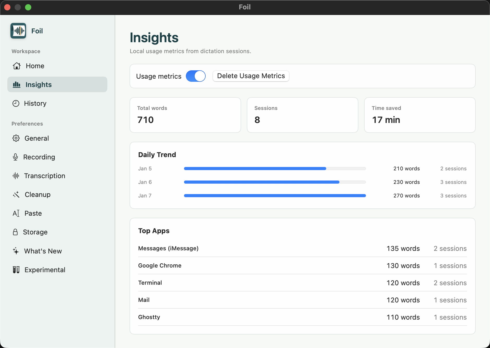

Capture
Stay in the app where the thought started.
Use hold-to-record or toggle mode, watch the floating status, then keep typing when the transcript lands.
Open source · macOS 14+
Hold a key, speak naturally, and release. Foil pastes the transcript where your cursor already is.
Choose local whisper.cpp, Groq, OpenAI Whisper, or your own compatible endpoint. Keep raw text, or polish it differently for the apps you use.
Free public beta · Apple Silicon and Intel · Bring your own provider

One hotkeyHold, speak, release, paste.
Four provider routesLocal, Groq, OpenAI, or custom.
App-aware cleanupRaw or polished, group by group.
Recoverable by designHistory and clipboard fallbacks.
The daily loop
Foil keeps capture simple while making providers, cleanup, privacy, and paste recovery visible.
Capture
Use hold-to-record or toggle mode, watch the floating status, then keep typing when the transcript lands.
Run Whisper locally, use Groq or OpenAI, or bring an OpenAI-compatible server.
Cleanup Groups apply prompts, preferred terms, and corrections only where you choose.
Search, edit, copy, paste, export, delete, or retry from local transcription history.
Track words, sessions, estimated time saved, daily trends, and top apps without transcript analytics.
Inside Foil 1.13.11
See recording readiness, recent transcripts, app-specific Cleanup Groups, local Usage Insights, and provider settings—all captured from Foil 1.13.11.



Your route, your choice
Transcription and cleanup are separate routes. Pick each deliberately.
Transcribe through a localhost OpenAI-compatible server.
Fast hosted transcription using your own Groq API key.
Use the whisper-1 model with your OpenAI API key.
Point Foil at your own compatible endpoint and model.
Free public beta
Homebrew installs the same signed, notarized, Sparkle update-signed macOS DMG published on GitHub Releases.
Current release: Foil 1.13.11, published July 6, 2026.
Terminal
brew tap mean-weasel/foil https://github.com/mean-weasel/homebrew-foil
brew install --cask foilDirect answers about cost, privacy, providers, and reliability.
Yes. Foil is a free public beta and its macOS source is available on GitHub. Hosted providers may charge for their own API usage.
Yes. Select Local whisper.cpp and point Foil at a local whisper-server. You can also use a custom OpenAI-compatible endpoint.
Keys are stored in macOS Keychain. History stays on this Mac. Successful audio is deleted; failed audio may be retained locally only for retryable failures. Read the privacy notes.
Paste automation depends on Accessibility permission and the target app. The transcript remains available through History and clipboard fallback paths.